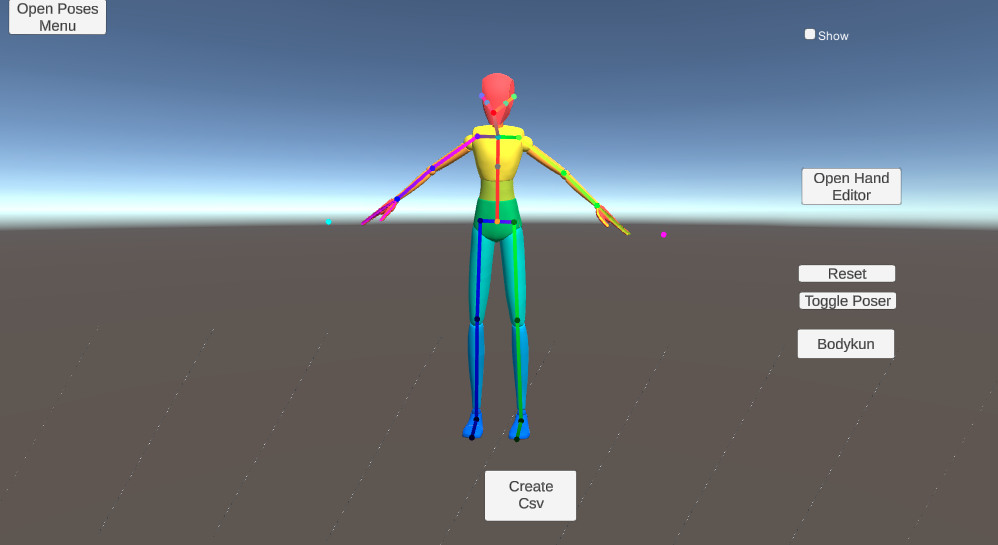
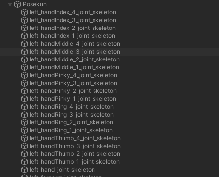
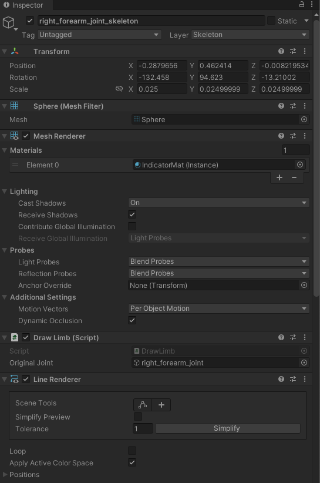

Rendering Posekun
Understanding how the pose visualization character (Posekun) is rendered and displayed in the scene.
Table of Contents
Overview
Posekun is a visualization of the joints of Bodykun.
It is similar to standard skeletons used by OpenPose and ControlNet. These are the visuals that are fed to the image generation model to control the pose.

The Posekun visual joints are parented to a separate gameObject in the scene “Posekun”.
Each of them has a Mesh Filter + Mesh Renderer, DrawLimb script and Line Renderer. Using the Line Renderer, a line is drawn from each joint to its parent.


Drawing Posekun is mainly handled by calls to the DrawPosekun class.
Related Classes
Poser Documentation: DrawPosekun Poser Documentation: Colors Poser Documentation: DrawLimb